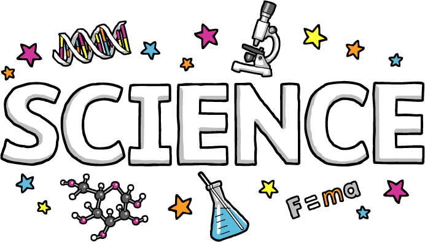
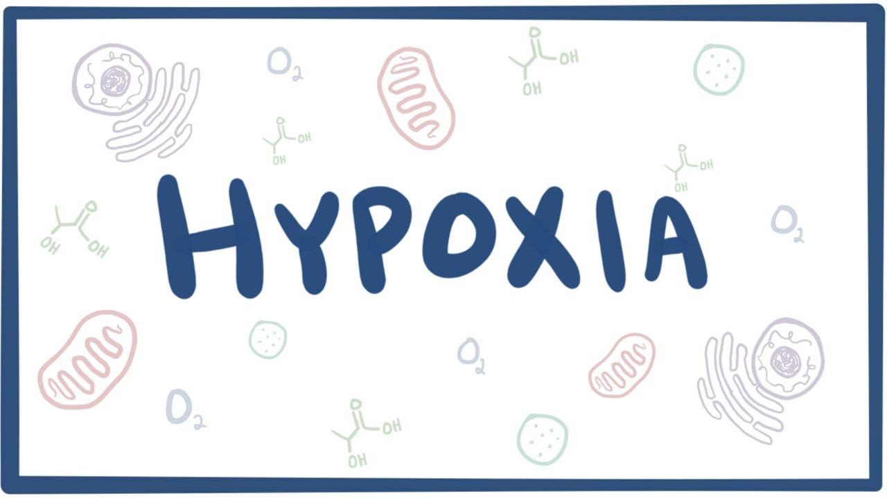
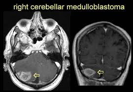
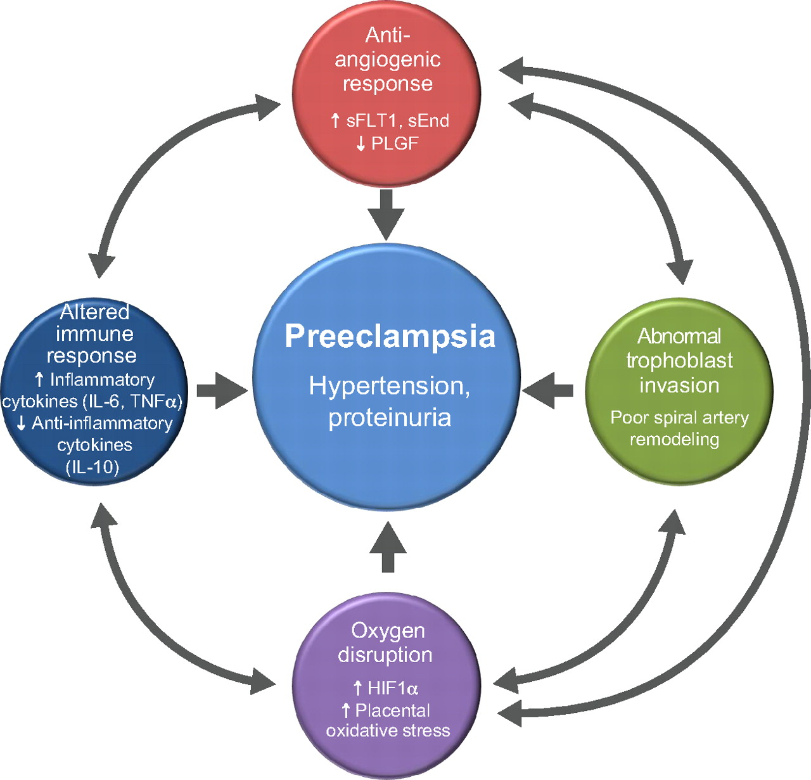
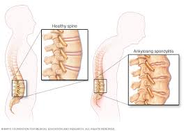
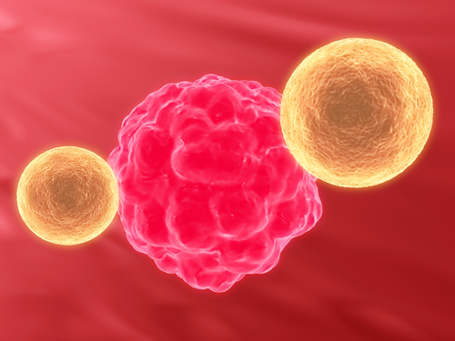
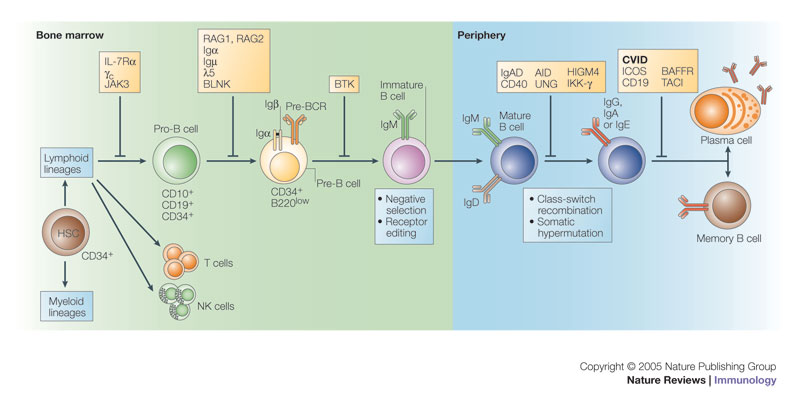
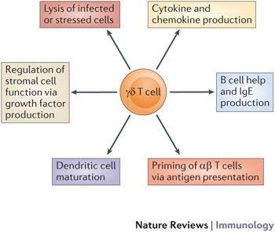
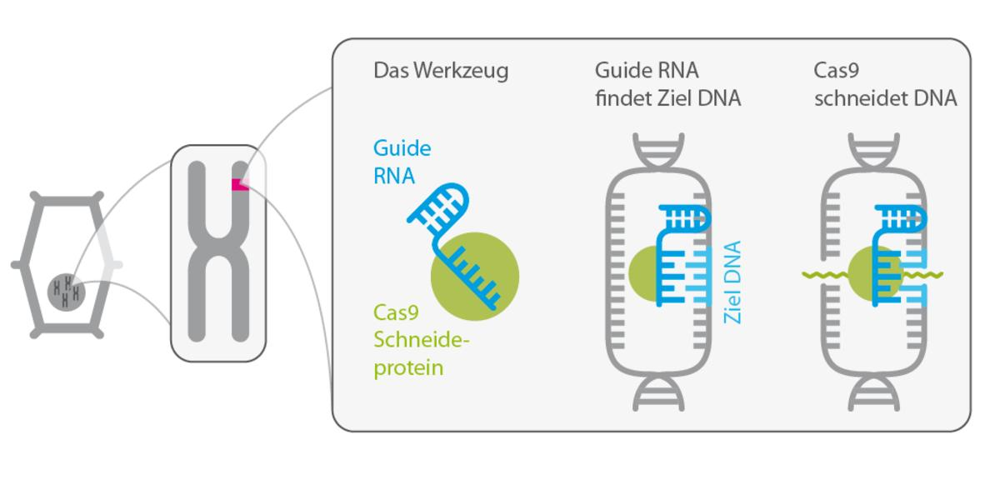

Science


The Tendon Seed Network
Human Cell Atlas
The Botnar Research Centre, University of Glasgow, University of Copenhagen and University of Zurich
The Tendon Seed Network will spatially define the transcriptome of extracellular matrix-rich tissues such as tendon across multiple anatomic and micro-anatomic sites. To enable this, the project will develop clinical, laboratory, bioinformatics, and mathematical modelling tools and platforms.

Hypoxia and brest cancer
Prof Adrian Harris
Weatherall Institute of Molecular Medicine, University of Oxford
I am leading the computational analysis of single-cell data to identify breast cancer responses to hypoxia.
Research Alliance on Women’s Health
Oxford Bayer Healthcare Collaborative
Weatherall Institute of Molecular Medicine, University of Oxford
Leading the integration of multi-omic data to identify drug targets for uterine fibroids and PCOS.

Understanding the epigenetic mechanisms of chemotherapy resistance in medulloblastoma
Dr. Tuğba Bağcı Önder
Koç University School of Medicine, Turkey
Recently, Tugba and I were awarded a Royal Society Advanced Newton award to identify epigenetic drug targets for the reversal of chemotherapy resistance in medulloblastoma.

Multi-omic approach to identify new biomarkers in preeclampsia patients
Dr Manu Vatish
Nuffield Department of Obstetrics and Gynaecology, University of Oxford
I am working in collaboration with Prof Ian Sargent and Dr Manu Vatish at the University of Oxford (Gynaecology). We are using proteomics and transcriptomics to identify biomarkers that could be useful in the diagnostic of preeclampsia. Our focus is directed towards investigating the role of extracellular vesicles, which are secreted in large volumes during preeclampsia. Extracellular vesicles persist in the plasma of patients for extended periods, which makes them an attractive biomarker. The data have revealed a number of proteins, mRNA and miRNA species that are differentially expressed between the placenta tissue and placental derived extracellular vesicles in normal and preeclampsia patients. The next phase of the project is to validate these potential biomarkers in a large number of patients. I plan to employ machine-learning approaches to develop a diagnostic tool for accurately assessing patient disease development, ultimately leading to better treatment outcomes.

Epigenetics of CD4 T cells in ankylosing spondylitis
Dr Liye Chen and Prof Paul Bowness
Botnar Research Centre, University of Oxford
In this collaboration I am leading the computational analysis of a number of projects focused on the epigenetics of T cells in the autoimmune disease AS.
Past projects
Metabolism of T helper cells
Prof Udo Oppermann and Prof Marc Feldmann
Botnar Research Centre, University of Oxford
In this project I have been investigating how inhibiting specific epigenetic pathways can lead to altered metabolic programming.
This work was published as Histone H3K27me3 demethylases regulate human Th17 cell development and effector functions by impacting on metabolism

Understanding the epigenetic pathways involved in Natural killer cell activation
Prof Udo Oppermann and Prof Sir Marc Feldmann
Botnar Research Centre, University of Oxford
In this project I undertook the wet-lab and computational work that led to identification of a number of epigenetic pathways that control inflammatory function. This project was initiated during my postdoctoral work in the Oppermann and Feldmann laboratories.
This work was published as Inhibition of histone H3K27 demethylases selectively modulates inflammatory phenotypes of natural killer cells.

B cell development in autoimmunity
Prof Richard Cornall and Dr Consuelo Anzilotti
WIMM, University of Oxford
I led the computational analysis of the transcriptome data of a novel B cell development autoimmune disease.
This work was published as An essential role for the Zn2+ transporter ZIP7 in B cell development
Investigating BET bromodomains in Dupytren’s disease
Dr Fiona McCann and Dr Lynn Williams
Kennedy Institute of Rheumatology, University of oxford
I am working in collaboration with Dr Lynn Williams and Dr Fiona McCann at the Kennedy Institute of Rheumatology to analyse transcriptome data from patients with Dupytren’s disease.

Single cell analysis of gamma delta T cells within salmonella infected patients
Prof Alison Simmons
WIMM, University of Oxford
This project is a collaboration with Prof Alison Simmons, University of Oxford (WIMM), using single cell transcriptomic approaches to identify T cell heterogeneity following salmonella infection in healthy individuals. This project has allowed me to apply multiple statistical approaches to model T cell heterogeneity using a combination of both Frequentist and Bayesian statistical approaches.

Designing CRISPR Cas gRNA across splice junctions in the human genome
Dr Daniel Ebner and Dr Andrew Bassett
Target Drug Discovery Institute, University of Oxford
This was the first coding project that I was involved with during my training at CGAT. I established a computational infrastructure and website to identify and rank the effectiveness of designing gRNAs to splice regions in proteins across the genome. Although successful, this project didn’t lead to a publication because a rival published before us, however it did allow me to develop my skills in SQL and website development.